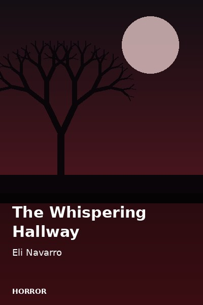
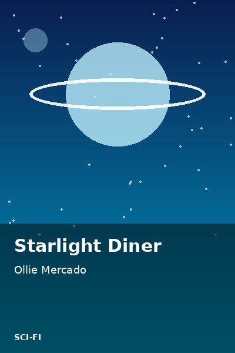
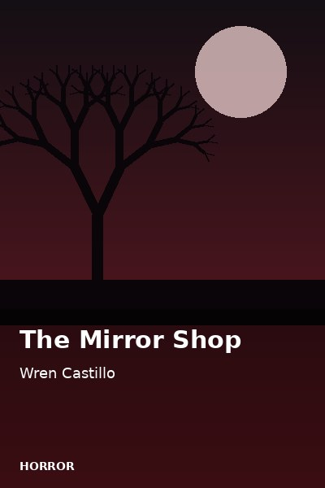

Romance
Letters to Marisol
A mailman keeps delivering letters addressed to a woman who moved away years ago.
Read Story30 stories, one chapter each.
A mailman keeps delivering letters addressed to a woman who moved away years ago.
Read StoryTwo rivals at a flower market discover they have been writing to each other anonymously.
Read StoryA commuter and a stranger share the same bus seat every morning without saying a word.
Read StoryA young dragon refuses to breathe flames and sets out to find another way to be brave.
Read StoryOn her first night at a school for spellcasters, Willa finds a door that is not on any map.
Read StoryA detective is handed a case that was officially closed twenty years ago.
Read Story
A night guard hears footsteps in a school that has been empty for years.
Read StoryA family moves into a house where the previous owner left one strict warning.
Read StoryA radio technician on a lonely moon base receives a message from the future.
Read StoryA repair robot discovers it can dream and does not know whom to tell.
Read StoryThree siblings follow their grandfather's compass, which points to treasure instead of north.
Read StoryA hiking club takes a shortcut and finds a mountain that is not on any map.
Read StoryWhen a stray cat accidentally wins a town poll, the whole village scrambles to make it official.
Read StorySomeone keeps stealing lunches from the office fridge, and Dan is determined to catch the thief.
Read StoryA bank analyst receives a countdown on her phone that no one else can see.
Read StoryA train passenger realizes the same stranger has appeared in every photograph she took on the trip.
Read StoryA merchant's daughter crosses the desert in 1521 to prove her family's honor.
Read StoryIn 1898 Manila, a young lamplighter becomes the messenger for a secret society.
Read Story
A girl and her father fold paper boats during the monsoon season, one for every worry.
Read StoryA retired pianist moves into a care home and finds an old piano nobody can play.
Read StoryA teenager returns to his hometown to scatter his grandmother's ashes and finds an old promise.
Read StoryIn a city of rain and glowing signs, a courier delivers a package that begins to hum.
Read Story
A diner at the edge of space serves meals to travelers who have lost their way.
Read StoryA knight who never speaks defends a village that does not know his name.
Read StoryA friendly ghost applies for work at a haunted hotel and is rejected for not being scary.
Read StoryA boy believes the fireflies that appear in winter are messages from his late mother.
Read Story
A girl inherits an antique shop where every mirror shows a different version of her.
Read StoryNo stories match your search. Try a different title or genre.